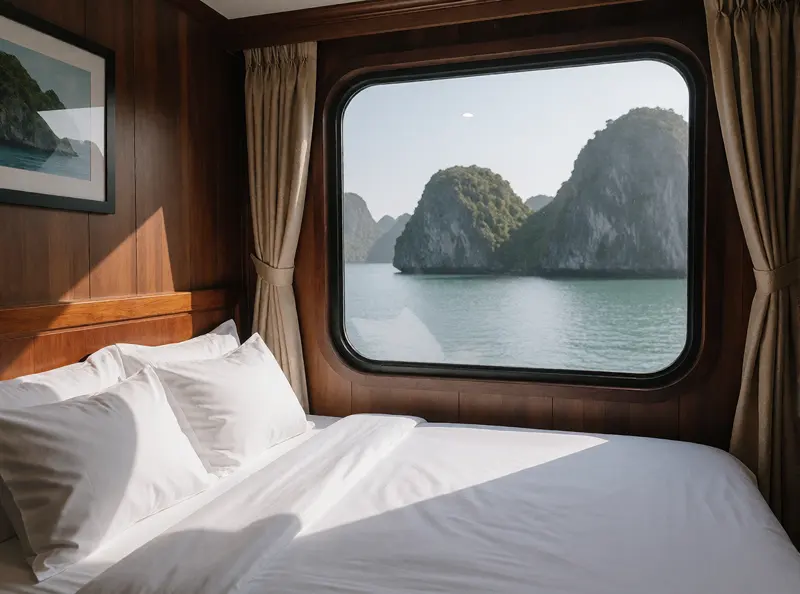

Kinh nghiệm du lịch Hạ Long 2 ngày 1 đêm
Lịch trình gợi ý, nên đi du thuyền hay ở khách sạn, và những điều nên biết trước.
Lịch trình gợi ý, nên đi du thuyền hay ở khách sạn, và những điều nên biết trước.
Thời tiết từng mùa trên vịnh và cách chọn ngày đi cho chuyến du thuyền.

Danh sách đồ mang theo, mẹo đi cùng trẻ nhỏ và người say sóng.